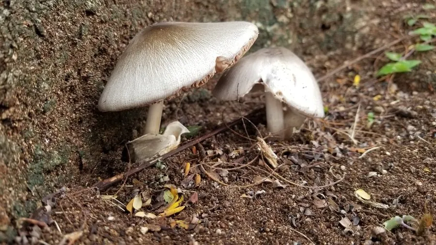

真菌 · 真菌界
草菇 Volvariella volvacea

草菇的菌盖灰褐色、基部有袋状菌托，是典型的高温型食用菌，用稻草堆栽培，从播种到出菇只需一周左右。
- 分类
- 门担子菌门纲伞菌纲目伞菌目科光柄菇科属小包脚菇属
- 栖息环境
- 稻草堆、腐草与堆肥，喜高温高湿环境
- 地理分布
- 原产中国南方，现东南亚及中国广东、福建等地广泛栽培
- 保护级别
- 暂无评估（IUCN 未评估，栽培食用菌）
物种志
草菇是担子菌门光柄菇科的真菌，子实体单生或群生。菌盖初期钟形或卵形，后平展，直径 5–12 cm，表面灰褐色至黑褐色，中央颜色较深，有放射状的纤维条纹；菌肉白色，松软。菌褶离生、密集，幼时白色，成熟后变为粉红色至肉红色。菌柄白色，圆柱形，长 5–10 cm，基部膨大并有一个袋状的菌托，没有菌环。孢子印粉红色。
草菇原产中国，是著名的热带和亚热带食用菌，多生于稻草堆、腐草和堆肥上，喜高温高湿，适宜温度约 28–35 ℃。中国广东、福建、湖南等地用稻草堆或废棉培养料栽培草菇，播种后约一周即可出菇，生长极快。草菇肉质脆嫩、味道鲜美，鲜食可炒、可做汤，也可加工成罐头出口；但它不耐低温，采后容易开伞变味，需要及时食用或加工。草菇的菌托是识别它的重要特征。
形态与习性
- 菌盖直径 5–12 cm，灰褐至黑褐色
- 菌褶白色，成熟后变粉红色
- 菌托基部有袋状菌托，无菌环
- 孢子印粉红色
- 栽培稻草堆或废棉培养料
- 生长温度适宜约 28–35 ℃，出菇极快
- 食用性可食，鲜食为主，也可制罐头
趣味知识
- 草菇基部有一个袋状的菌托，是它最明显的识别特征。
- 它是典型的高温型蘑菇，28–35 ℃ 时长得最快。
- 用稻草堆种下菌种，约一周就能采收第一批草菇。
- 草菇采后容易开伞变质，最好当天食用。